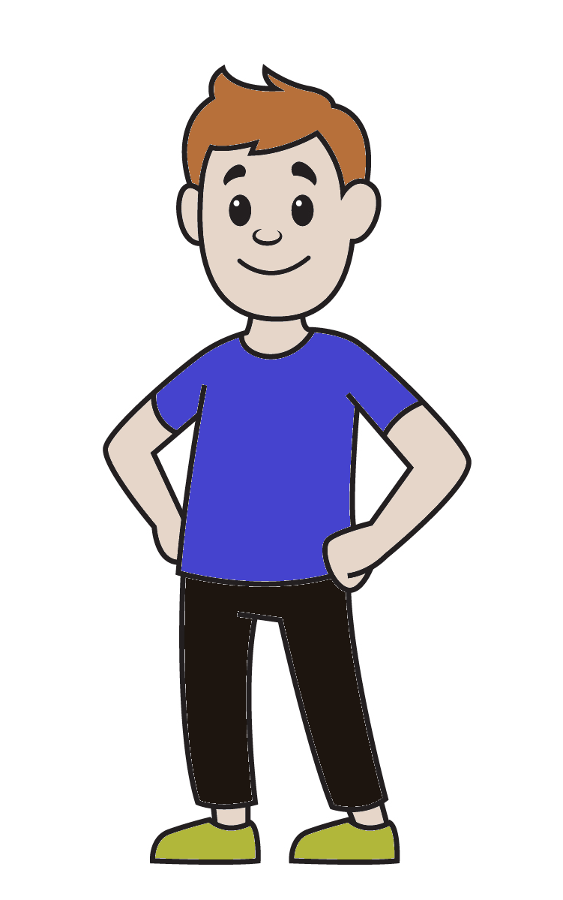

▲▼▲▼▲▼▲▼▲▼▲
Kia ora, I'm Jessie! I'm excited to be part of the Aihe intake for Dev Academy in 2022.
I'm based in Christchurch and live with three cats, two bunnies and one husband!
You can read more about me and my learning journey in my blog posts and the About page.
▲▼▲▼▲▼▲▼▲▼▲
◄► Javascript Fundamentals ◄►
Javascript is a core part of computer programming; it gives you wide range of flexibility when creating a web page or app. With Javascript you can achieve a lot of things that are simply not possible with only HTML and CSS.
In this blog we'll go over some of the key concepts of this language, how it relates to HTML/CSS and how to use the DOM.
What is Javascript? How does it work with HTML and CSS?
You can compare the relationship between Javascript, CSS and HTML to a person.
The HTML can provide basic information about the person; their structure. Let's say that they have a head, arms, torso and legs. Technically you wouldn't see any kind of drawing here just with html - it would be all html elements, but for the anaology let's ignore that.
CSS then can make them a bit more interesting. CSS adds their height, width, what colour clothes they're wearing, their hair style and colour. Now we have a person ready to go - but they're not doing a whole lot.
JavaScript is giving the person the ability to change! This can be in so many ways, but here are a few you can try - press the buttons below to trigger an event to change our person.
Control flow, conditionals and loops
Control flow is the way a document is read. The default is top to bottom, however with Javascript we can get more creative and execute different sections of our code when we want.
This is done by one of two ways:
- Conditional Statments
- if/else
- switch
- ternary
- Loops
- for loops
- do/while loops
- ... and many more!
You can compare control flow, loops and conditional statements to everyday life. For example, the default flow for your life may be:
- Wake up
- Eat breakfast
- Get changed
- Go to work
- Go home
- Watch Netflix
- Go to bed
However, those list items will not always need to be completed - and this is where if/else conditional statements and for loops comes in.
The condition could state that if it is a weekday, you should loop through the above activities 5 times. However if else it is a weekend, you should loop through a different group of activities 2 times:
- Sleep in
- Go out for brunch
- Catch up with friends
- Go Shopping
- Stay up late
Once that loop is completed, the rest of the code would continue.
In general, loops allow you to do repetitive tasks with less code.
I want to make a quick note of the key parts of a loop:
- This first part is called the Initializer - this is declaring a variable.
Usually it's i, but it can be anything - for example, num instead.
It can be written as let num = 0, but the let is usually removed and i is used instead, so i = 0.
- The second part is called the Condition and usually looks something like i > 10.
The number to the right is the condition that needs to be met - to be recognised as true to continue running the code.
In this example, it's saying "keep running this loop as long as our variable is greater than 10."
- The third part is called the Final expression - i++.
This says "after each loop, add one." This means in the next loop, the computer will no longer see i = 0 but instead i = 1.
Here's a really good video on loops.
Arrays vs Objects
Objects and Arrays are similar and often used within each other, but they are different in how they store data and how this data is accessed. Having both options and being able to use them together allows us greater flexibility when pulling and storing data.
Arrays are lists within two square brackets:
let array = [orange, banana, pineapple, apple];
They are accessed by calling their number, which starts from 0. For example if you wanted to access "banana" from the array above you would need to call array[1].
Objects are also lists, but they are in pairs of keys and values rather than single comma-delimited values. They are accessed via dot notation, and use curly brackets:let object = {
fruit: 'orange',
ripeness: 'underipe'
delicious: true
};
To check if the fruit was delicious, you would call object.delicious.
What is the DOM and how do you use it?
The DOM stands for document object model and ties HTML, CSS and JavaScript together. It represents your entire document, and you can use it to make dynamic changes to the code.
An example of how you could use the DOM to improve your website is to change the text when an event happens. You can create a button in HTML that says "Turn me red!" that on the click, changes (via JavaScript) the page text to red.
Here are some common methods/ways to interface with the DOM:
- document.querySelector(selector)
- document.querySelectorAll(name)
- element.innerHTML
- element.style.left
- element.addEventListener()
Functions - what are they and why do we need them?
Functions are a really important part of JavaScript, as it stops us from writing the same code over and over. You use functions to define what should happen to the code when the function is called, and then re-use that same function later on, rather than re-writing it all.
Here is a very simple version of a function. Usually there would be a lot more code in the function itself, but you can see how the rules are set in the function and then the call tells it to run.